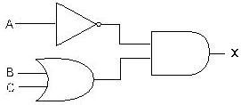
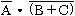
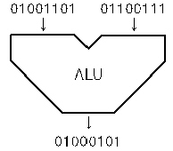
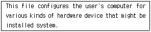

정보처리기능사 (2009-01-18 기출문제)
1과목: 전자 계산기 일반
1. 현재 수행중에 있는 명령어 코드(code)를 저장하고 있는 임시 저장 장치는?
- 인덱스 레지스터(Index register)
- 명령 레지스터(Instruction register)
- 누산기(Accumulator)
- 메모리 레지스터(Memory register)
(정답률: 82%)

2. 반가산기(half-adder)에서 두개의 입력 비트가 모두 1 일 때 합(sum)은?
- 0
- 1
- 10
- 11
(정답률: 59%)
3. EBCDIC 코드의 존(zone) 코드는 몇 비트로 구성되어 있는가?
- 8
- 7
- 6
- 4
(정답률: 82%)
4. 주기억장치에서 기억장치의 지정은 무엇을 따라 행하여 지는가?
- 레코드(Record)
- 블록(Block)
- 어드레스(Address)
- 필드(Field)
(정답률: 74%)
5. 레지스터에 새로운 데이터를 전송하면 먼저 있던 내용은 어떻게 되는가?
- 기억된 내용에 아무런 변화가 없다.
- 먼저 내용은 지워지고 새로운 내용은 기억된다.
- 먼저 내용은 다른 곳으로 전송되고 새로운 내용만 기억된다.
- 누산기(Accumulator)에서는 덧셈이 이루어 진다.
(정답률: 79%)
6. 2진수 "101111110"을 8진수로 변환하면?
- (576)8
- (567)8
- (558)8
- (557)8
(정답률: 78%)
7. 진리표가 다음 표와 같이 되는 논리회로는?
- AND 게이트
- OR 게이트
- NOR 게이트
- NAND 게이트
(정답률: 80%)
8. 다음 중 입력이 어느 하나라도 1 이면 출력이 1 이 되고, 입력이 모두 0 일 때 만 출력이 0 이 되는 게이트는?
- NOT
- AND
- OR
- XOR
(정답률: 75%)
9. 명령어는 연산자 부분과 주소 부분으로 구성되는데 주소(operand)부분의 구성 요소가 아닌 것은?
- 데이터의 주소 자체
- 명령어의 순서
- 데이터의 종류
- 데이터가 있는 주소를 구하는데 필요한 정보
(정답률: 50%)
10. 그림과 같은 논리회로에서 출력 X에 알맞은 식은?(단, A,B,C 는 입력임)





(정답률: 81%)
11. 1 비트(bit) 기억장치로 가장 적합한 것은?
- 레지스터
- 누산기
- 계전기
- 플립플롭
(정답률: 77%)
12. 다음 보기의 연산은?

- AND 연산
- OR 연산
- MOVE 연산
- Complement 연산
(정답률: 83%)
13. ( A + 1 )·(B + 1)+ C의 논리식을 간단히 한 것은?
- 1
- 0
- A
- C
(정답률: 68%)
14. 중앙처리장치에서 명령이 실행될 차례를 제어하거나 특정 프로그램과 관련된 컴퓨터 시스템의 상태를 나타내고 유지해 두기 위한 제어 워드로서, 실행중인 CPU의 상태를 포함 하고 있는 것은?
- PSW
- SP
- MAR
- MBR
(정답률: 73%)
15. 다음은 명령어 인출 절차를 보인 것이다. 올바른 순서로 나열된 것은?
- ①→②→③→④
- ③→②→①→④
- ④→②→①→③
- ①→③→④→②
(정답률: 52%)
16. 다음 중 제어장치에서 명령어의 실행 사이클에 해당하지 않는 것은?
- 인출 주기(fetch cycle)
- 직접 주기(direct cycle)
- 간접 주기(indirect cycle)
- 실행 주기(execute cycle)
(정답률: 49%)
17. 중앙처리장치(CPU)의 기능을 설명한 것으로 옳지 않은 것은?
- 작업을 감독하는 기능 수행
- 산술연산, 논리연산을 수행
- 프로그램과 데이터를 저장하는 기능 수행
- 원시프로그램을 목적프로그램으로 변환하는 기능 수행
(정답률: 62%)
18. RS플립플롭에서 S=1, R=1이면 출력은 어떤 상태가 되는가?
- 불변 (No Change)
- 0 으로 Reset됨
- 1로 Set됨
- 불능(Not Allowed)
(정답률: 58%)
19. 오퍼랜드(Operand) 자체가 연산대상이 되는 주소 지정 방식은?
- 즉시주소지정(Immediate Addressing)
- 직접주소지정(Direct Addressing)
- 간접주소지정(Indirect Addressing)
- 묵시적주소지정(Implied Addressing)
(정답률: 51%)
20. 마이크로 프로세서의 성능을 나타내는 MIPS 는 무엇의 약자인가?
- micro istruction per second
- million istruction per second
- minute istruction per second
- medium istruction per second
(정답률: 66%)
2과목: 패키지 활용
21. 사원(사원번호, 이름) 테이블에서 "사원번호"가 "200"인 튜플을 삭제하는 SQL 문은?
- REMOVE TABLE 사원 WHERE 사원번호 = 200;
- KILL 사원번호, 이름 FROM 사원 WHERE 사원번호 = 200;
- DELETE FROM 사원 WHERE 사원번호 = 200;
- DROP TABLE 사원 WHERE 사원번호 = 200;
(정답률: 66%)
22. SQL 명령어 중 데이터 정의문(DDL)에 해당하는 것은?
- UPDATE
- CREATE
- SELECT
- DELETE
(정답률: 72%)
23. 관계 데이터 모델에서 하나의 애트리 뷰트가 취할 수 있는 같은 타입의 원자 값들의 집합을 무엇이라고 하는가?
- 도메인
- 속성
- 스키마
- 튜플
(정답률: 72%)
24. 프리젠테이션 프로그램의 사용 용도로 거리가 먼 것은?
- 교육 자료 제작
- 제품 설명회 자료 작성
- 통계 자료 계산
- 회의 자료 작성
(정답률: 83%)
25. SQL 구문 형식으로 적당하지 않은 것은?
- SELECT ~ FROM ~ WHERE ~
- DELETE ~ FROM ~ WHERE ~
- INSERT ~ INTO ~ WHERE ~
- UPDATE ~ SET ~ WHERE ~
(정답률: 70%)
26. 데이터베이스의 구조를 3단계로 구분할 때 해당하지 않는 것은?
- 내부 스키마
- 외부 스키마
- 개념 스키마
- 내용 스키마
(정답률: 84%)
27. 테이블에서 각 레코드를 식별할 수 있는 유일한 값을 갖는 필드를 무엇이라 하는가?
- 셀
- 블록
- 기본 키
- 슬라이드
(정답률: 51%)
28. DBMS의 필수 기능에 해당하지 않는 것은?
- 정의 기능
- 조작 기능
- 독립 기능
- 제어 기능
(정답률: 81%)
29. 스프레드시트에서 행과 열이 교차하면서 만들어지는 사각형으로, 데이터가 입력되는 기본 단위를 무엇이라고 하는가?
- 클립보드
- 필터
- 슬라이드
- 셀
(정답률: 82%)
30. 스프레드시트에서 반복 실행해야 하는 동일 작업이나. 복잡한 작업을 하나의 명령으로 정의하여 실행할 수 있는 기능을 무엇이라고 하는가?
- 슬라이드
- 매크로
- 필터
- 시나리오
(정답률: 83%)
3과목: PC 운영 체제
31. "윈도 98"에서 여러 개의 활성화 된 창을 순차적으로 전환 할 때 사용하는 단축키는?
- <Alt> + <Tab>
- <Alt> + <Esc>
- <Ctrl> + <Tab>
- <Shift> + <Tab>
(정답률: 27%)
32. 컴퓨터에 하드디스크를 새로 장착하고 부팅 가능한 하드 디스크로 만들기 위한 도스 명령어는?
- FORMAT C: /S
- FORMAT C: /B
- FORMAT C: /T
- FORMAT C: /Q
(정답률: 58%)
33. 컴퓨터 센터에 작업을 지시하고 나서부터 결과를 받을 때 까지의 경과시간은?
- 서치 시간(search time)
- 엑세스 시간(access time)
- 프로세스 시간(process time)
- 턴어라운드 시간(turnaround time)
(정답률: 57%)
34. 중앙처리장치와 같이 처리속도가 빠른 장치와 프린터와 같이 처리속도가 느린 장치들 간의 처리속도 문제를 해결하기 위한 방법은?
- 링킹
- 스풀링
- 매크로 작업
- 컴파일링
(정답률: 76%)
35. "윈도 98"의 특징으로 옳지 않은 것은?
- 플러그 앤 플레이 기능이 있다
- 네트워크에 필요한 기능이 추가되어 모뎀이 없어도 통신이 가능하다.
- 멀티태스킹이 가능하여 여러 작업을 동시에 실행할 수 있다.
- 프로그램이나 폴더 등을 아이콘화하여 사용자가 편리하게 접근할 수 있다.
(정답률: 74%)
36. 도스(MS-DOS)에서 "config.sys" 파일과 "autoexec.bat" 파일의 수행을 사용자가 선택하여 실행하려고 하는 경우, 사용하는 기능키(Fucntion Key)는?
- F4
- F5
- F7
- F8
(정답률: 68%)
37. 현재 디렉토리(Directory)의 내용을 확인하기 위하여 도스의 DIR 명령을 사용하는 경우 화면에 가장 많은 파일을 표현할 수 있는 명령 방식은?
- DIR/W
- DIR/P
- DIR
- DIR *.*
(정답률: 56%)
38. 운영체제에서 가장 기초적인 시스템 기능을 담당하는 부분으로 관리자(Supervisor), 제어 프로그램(Control Program), 핵(Nucleus) 등으로 부르며 프로세스관리, CPU 제어, 입/출력 제어, 기억장치 관리 등의 기능을 수행하는 것은?
- 커널(Kernel)
- 파일 시스템(File system)
- 인터페이스(Interface)
- 데이터관리(Data control)
(정답률: 66%)
39. "윈도 98"의 클립보드에 대한 설명으로 옳지 않은 것은?
- 윈도에서 자료를 일시적으로 보관하는 장소를 제공한다.
- 선택된 대상을 클립보드에 오려두기를 할 때 사용되는 단축키는 Ctrl + V 이다
- 가장 최근에 저장된 파일 하나만을 저장할 수 있다.
- 클립보드에 현재 화면 전체를 복사하는 기능키는 Print Screen 이다.
(정답률: 72%)
40. 운영체제를 구성하고 있는 시스템 프로그램 중 제어 프로그램에 해당하는 것은?
- 처리 프로그램
- 서비스 프로그램
- 작업 관리 프로그램
- 언어 처리 프로그램
(정답률: 63%)
41. 90% 이상이 고급언어인 C 로 구성되어 있으며, 시스템이 모듈화되어 있어 필요에 따라 변경, 확장할 수 있고 다중 사용자를 위한 대화식 운영체제는?
- UNIX
- PASCAL
- MS-DOS
- Windows 98
(정답률: 74%)
42. "윈도 98"에서 디스크 조각모음을 수행할 수 없는 매체는?(단, 각 매체는 로컬(Local) 매체를 의미한다.)
- 3.5 인치 플로피 디스크
- USB 메모리(이동식 디스크)
- 하드 디스크
- CD-ROM
(정답률: 55%)
43. 도스(MS-DOS)에서 외부명령어가 아닌 것은?
- FORMAT
- COPY
- CHKDSK
- LABEL
(정답률: 68%)
44. "윈도 98"에서 작업표시줄에 볼륨 조절 표시 아이콘을 생성할 수 있는 제어판의 아이콘은?
- 사운드
- 멀티미디어
- 내게 필요한 옵션
- 시스템
(정답률: 60%)
45. "윈도 98"에서 워드패드로 작성한 파일 저장시 기본적으로 제공되는 확장자명은?
- bmp
- gif
- hwp
- doc
(정답률: 46%)
46. "윈도 98"에서 바탕화면에 있는 아이콘을 정렬하려고 할 때 기본적으로 제공되는 아이콘 정렬 방식이 아닌 것은?
- 계단식 정렬
- 크기별 정렬
- 자동 정렬
- 종류별 정렬
(정답률: 68%)
47. 디렉토리 내의 파일을 열거하는데 사용되는 UNIX의 명령어는?
- cd
- ls
- tar
- pwd
(정답률: 59%)
48. 도스(MS-DOS)에서 하드디스크를 논리적으로 여러 개의 디스크로 나누어 각 볼륨이 서로 다른 드라이브 문자를 가진 별개의 드라이브로 동작하도록 하는데 사용되는 명령어는?
- FDISK
- CHKDSK
- VOL
- XCOPY
(정답률: 67%)
49. What is the name of the program that can fix minor errors on your hard drive?
- SCANDISK
- FDISK
- FORMAT
- MEM
(정답률: 52%)
50. 도스(MS-DOS)에서 다음의 내용이 설명하는 것은?

- FDISK.EXE
- CONFIG.SYS
- SYS.COM
- FORMAT.COM
(정답률: 60%)
4과목: 정보 통신 일반
51. 주파수분할 다중화에서 부채널(Sub-channel)간의 상호 간섭을 방지하기 위한 완충 대역은?
- 채널(Channel)
- 가드 밴드(Guard Band)
- 네트워크(Network)
- 마스터 그룹
(정답률: 72%)
52. 다음 중 PCM 통신방식의 수신측에서 이루어지는 과정은?
- 복호화
- 양자화
- 부호화
- 표본화
(정답률: 45%)
53. 에러검출후 재전송(ARQ) 에러 제어방식에 속하지 않는 것은?
- Stop-and-Wait
- Go-back-N
- 선택적 재전송
- 전진에러수정
(정답률: 49%)
54. 터미널이 8개가 설치된 시스템에서 각 터미널 상호 간을 망으로 결선하려면 최소로 필요한 회선수는?
- 8회선
- 16회선
- 28회선
- 42회선
(정답률: 50%)
55. TV 화면과 화면 사이트 귀선시간을 이용하여 정보을 전송하는 뉴미디어는?
- Videotex
- HDTV
- Teletext
- CATV
(정답률: 37%)
56. 패킷교환방식에 대한 설명으로 옳지 않은 것은?
- 통신망에 의한 패킷의 손실이 있을 수 있다.
- 패킷의 저장 및 전송으로 이루어 진다.
- 전송속도와 코드 변환이 가능하다.
- 공중 데이터 교환망에는 사용되고 있지 않다.
(정답률: 59%)
57. 다음 중 광통신에서 발광기로 사용되는 다이오드는?
- 제너 다이오드
- 에사키 다이오드
- 스위칭 다이오드
- 레이져 다이오드
(정답률: 59%)
58. 다음 중 RS-232C와 가장 관련이 있는 것은?
- MPEG 압축
- HDLC 프로토콜
- INTERNET 주소
- 물리계층
(정답률: 46%)
59. 데이터통신의 전송시스템에 순간적으로 일어나는 높은 전력의 잡음을 무엇이라고 하는가?
- 충격성 잡음
- 백색 잡음
- 상호변조 잡음
- 위상 왜곡
(정답률: 55%)
60. 항공기, 열차 등의 좌석 예약이나 뱅킹 시스템(Banking system)에 사용되는 처리방식은?
- 배치(batch)처리 시스템
- 온-라인 리얼타임(on-line real time) 시스템
- 오프라인(off-line) 시스템
- 멀티 프로세싱(multi-processing) 시스템
(정답률: 70%)